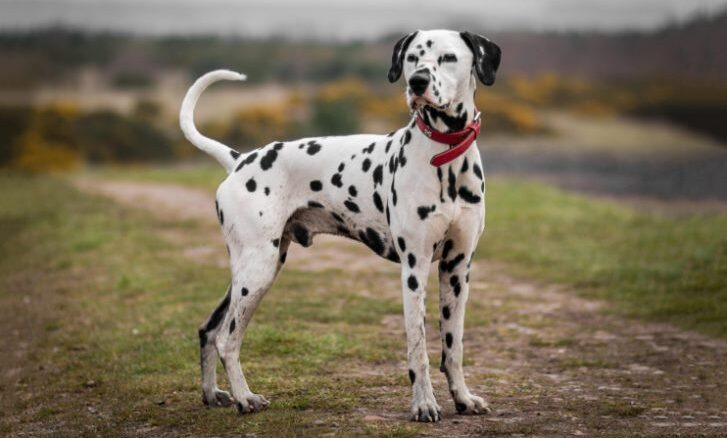

Am facut acest chec pufos cu cacao de atata ori si pentru atat de multe ocazii, incat cred ca-l pot face cu ochii inchisi. Checul este unul din deserturile clasice romanesti. Il faceau bunicile noastre, mamele noastre si acum este randul nostru sa ducem reteta mai departe. Este atat de iubit si de popular incat tuturor le place. Mama este una dintre marile iubitoarele acestui chec, la fel ca mine, de altfel. Alaturi de reteta de cozonac, checul este desertul pe care il facem cel mai des. Ni l-a facut toata copilaria si imi amintesc cu drag si nostalgie de feliile groase de chec presarate din abundenta cu zahar pudra. Era minunat pentru micul dejun, dar si ca gustare.
Și intru-n club, ayy, cad blugii de pe mine
Plec cu șase fete că sunt rupte pe pastile, hm
Vin și verii mei cu mine, zici că sunt gorile, hm
Crede c-o iau de nevastă, frate și-a luat filme
| Specie | Varsta | Imagine |
|---|---|---|
| teckel | 3 | |
| retriever | 6 | |
| dalmatian | 5 |  |